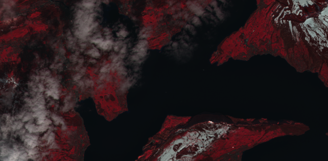

Welcome to the documentation of the Earth Observation Data Analysis Library (EOdal)¶
{kind=link}
A truely open-source package for unified analysis of Earth Observation (EO) data.
cloud-native by design thanks to STAC
access to petabytes of satellite imagery including Landsat, Sentinel-1, Sentinel-2 and PlanetScope
EO data querying, I/O, processing, analysis and visualization in a single package
Modulare and lightweight architecture
Almost unlimited expandability with interfaces to xarray, numpy, geopandas, and many more
Getting started¶
EOdal can be installed from PyPi or from source.
To get started you might have a look at some Jupyter notebooks we prepared. Check them out here
Example¶
eodal_example.py¶
import geopandas as gpd
from datetime import datetime
from eodal.core.sensors.sentinel2 import Sentinel2
from eodal.mapper.feature import Feature
from eodal.mapper.filter import Filter
from eodal.mapper.mapper import Mapper, MapperConfigs
from typing import List
#%% user-inputs
# -------------------------- Collection -------------------------------
collection: str = 'sentinel2-msi'
# ------------------------- Time Range ---------------------------------
time_start: datetime = datetime(2022,3,1) # year, month, day (incl.)
time_end: datetime = datetime(2022,6,30) # year, month, day (incl.)
# ---------------------- Spatial Feature ------------------------------
geom: Path = Path('data/sample_polygons/lake_lucerne.gpkg')
# ------------------------- Metadata Filters ---------------------------
metadata_filters: List[Filter] = [
Filter('cloudy_pixel_percentage','<', 80),
Filter('processing_level', '==', 'Level-2A')
]
# query the scenes available (no I/O of scenes, this only fetches metadata)
feature = Feature.from_geoseries(gpd.read_file(geom).geometry)
mapper_configs = MapperConfigs(
collection=collection,
time_start=time_start,
time_end=time_end,
feature=feature,
metadata_filters=metadata_filters
)
# now, a new Mapper instance is created
mapper = Mapper(mapper_configs)
# query the metadata (i.e., available scenes) first
mapper.query_scenes()
# load the scenes available from STAC (reading bands B02 "blue", B03 "green", B04 "red")
scene_kwargs = {
'scene_constructor': Sentinel2.from_safe,
'scene_constructor_kwargs': {'band_selection': ['B02', 'B03', 'B04'], 'read_scl': False}
}
mapper.load_scenes(scene_kwargs=scene_kwargs)
# the data loaded into `mapper.data` as a EOdal SceneCollection
mapper.data
A truely open-source package for unified analysis of Earth Observation (EO) data.
Table of Contents:
- API Reference
- Changelog
- Version `0.2.2 < https://github.com/EOA-team/eodal/releases/tag/v0.2.2>`__
- Version `0.2.1 < https://github.com/EOA-team/eodal/releases/tag/v0.2.1>`__
- Version `0.2.0 < https://github.com/EOA-team/eodal/releases/tag/v0.2.0>`__
- Version `0.1.1 < https://github.com/EOA-team/eodal/releases/tag/v0.1.1>`__
- Version `0.1.0 < https://github.com/EOA-team/eodal/releases/tag/v0.1.0>`__
- Version `0.0.1 < https://github.com/EOA-team/eodal/releases/tag/v0.0.1>`__
- Module Index
- Index